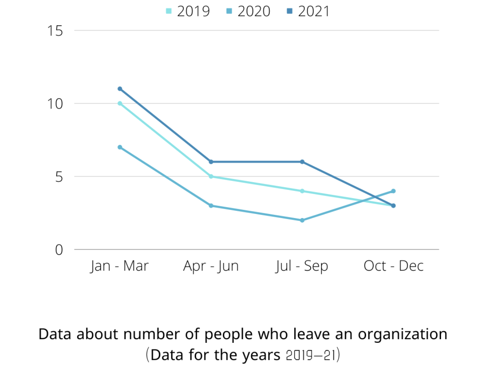
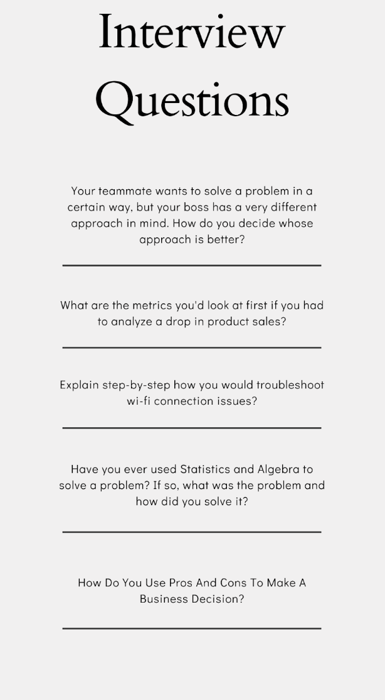
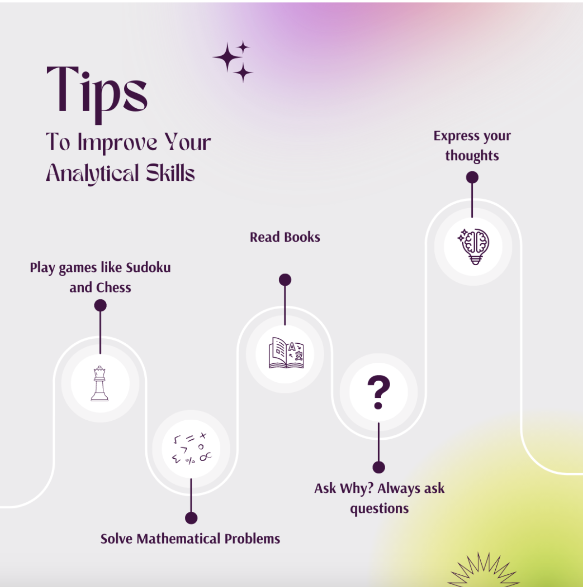

“Analytical thinking has become a highly sought-after skill As every function
seeks to operate more efficiently and to drive return on investment, the
ability to analyse enables informed decision making.”
Mike Dickson, Director NSW at Six Degrees Executive.
‘Ability to analyze’ is not subject to a certain profession or a domain. It can
be just as simple as you trying to come up with a solution for a puzzle, and it
can be as complex as coding and conducting software testers.
But how do you demonstrate ‘the ability to analyze’
Well, there are certain steps involved in everything you analyze. And even
though the steps change with respect to the kind of problem you are trying to
solve or type of data you are trying to analyze, there is an overall principle
to the approach.
Step #1 - Understanding the Problem
Suppose you work for a medium sized firm which sells Electrical components to
local manufacturers and store owners. Your sales have been plummeting for months
in a row and your boss has tasked you with analyzing which factors contributed
to the dip in sales.
The first step would be to understand the problem at hand. In this case, you
will need to see what has been happening in your marketing strategy, how the
price of components have been changing, whether there was a dip in production or
business and so on. The first step is to get as much information as you can
relating to the problem that’s been given and understand why it’s happened.
Step #2 - Analyzing Data and Information
This is where you take all the information you have gathered and make a
comprehensive analysis of it, based on your understanding of the problem at
hand. This will help you come up with possible explanations for this downturn in
sales. The context that needs to be assessed here should be as comprehensive as
possible, including factors like marketing strategy and pricing policies. There
are various ways in which you can do this; for instance:
a) Detects Patterns in data. One of the best ways to derive insights is to find
patterns in the information that you have come across. At times, finding certain
commonalities can be quite difficult; however, it is a great way to make a
decision.
Look at the graph below and see whether there are suspicious patterns or
trends:

You can clearly see that employee attrition is highest in the months between
January and April, and the rate decreases as the year progresses.
b) Asking questions about the problem and its solution. This can lead you to the
root of the problem and help you answer many questions which might otherwise
remain unanswered.
c) Creating observations based on historical trends and forecasting. Now, this
is how you can compile and analyze the data that you have gathered to make a
decision, rather than just going by what you know.
Step #3 - Communicating the results and Taking Action
Now that you have understood the problem and have come up with a set of
insights. If you can't verbalize these insights, then all this effort would be
in vain. Making sure that your analysis also includes a set of actionable steps
and strategies is imperative. For example, for people who do not understand the
intricacies of industrial data, simple explanations behind some insights and how
to act on them would be really helpful.
Remember, you would need to take feedback from your boss and other stakeholders
that have been impacted by the downturn. You should also make sure that everyone
who has an interest in the outcome of this analysis has access to it in order to
support it.
How do the recruiters measure the ‘ability to analyze’
Recruiters don't have a magic eye to see through your resume and ascertain
whether you are good at analysis or not. They need to measure the ‘ability to
analyze’, just like they measure skills like programming or web design.
Here are some ways recruiters assess a candidate's ability to analyze:
They set up a situation in which they can observe how you tackle problems and
how you go about analyzing them. This is usually done through interview
questions such as the ones below:

They ask what is the biggest problem the candidate has faced till now, and how
the candidate solved the question. Here, the interviewer is trying to assess
what the candidate considers to be a big problem, how much is that candidate
willing to share, and how honest they are, etc.
The Recruiter may need to see you in action, so they may ask you to set up a
situation which comes along with some data and analyze it. Recruiters may ask
you to look at random info/problems and derive solutions for/insights out of it.
An example of this would be - Candidate A has good Excel skills, so he/she will
be asked to use Microsoft Excel, then given random data and asked questions like
"Explain this in layman's terms."
In most cases though, recruiters are more than happy if they could see how you
gather info, address the problems, use critical thinking to assess data and make
informed decisions.
What can I do to develop this skill?
'Don’t solve the puzzle, make one.'
Now that seems counterintuitive. doesn't it.
To explain what I mean, think back to how we were told to solve puzzles as a
kid. We were told to learn the basics about the puzzle first, to build it
ourselves piece-by-piece and see what we can gather about solving the puzzle
from that.
Don’t solve a puzzle, make one. As we were kids, we always solved sudoku or
puzzles that we got in the newspapers/magazines. However, have you ever thought
of making a puzzle on your own? Think about it, think about making a sudoku from
ground zero. Once you follow this process of making a puzzle, you understand
every single detail, rule, and foundations to build these puzzles. This makes
your ability to analyze stronger and your ability to get into the details of a
problem.

Wear your reasoning goggles, put on your thinking hats and start fiddling with
your analyzing gloves by working on practical, real-world problems. The key here
is putting yourself into the shoes of a business owner or manager who has been
tasked with analyzing situations like these on a regular basis. Try to figure
out what lies behind any trend - is it related to the economy, changing
demographics, changing tastes and so on.